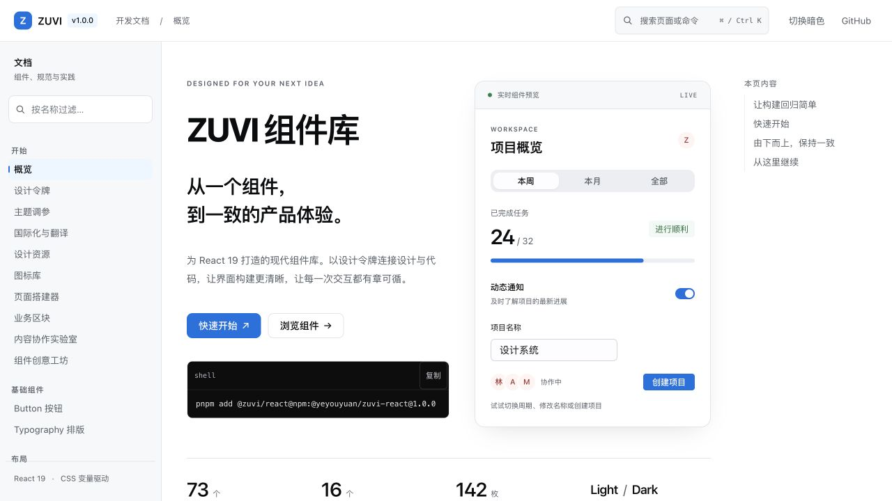

关联开源项目
ZUVI
从一个组件，到完整的产品体验。
为 React 19 打造的组件库与界面工具集。以设计令牌连接设计与代码，将交互组件、业务区块与可视化页面搭建，放进同一套工作流。
当前源码位于 yeyouyuan/zuvi，仓库暂未迁入星织。

作品与实践
从设计语言到可用界面，
在真实的作品里持续打磨。
关联开源项目
从一个组件，到完整的产品体验。
为 React 19 打造的组件库与界面工具集。以设计令牌连接设计与代码，将交互组件、业务区块与可视化页面搭建，放进同一套工作流。
当前源码位于 yeyouyuan/zuvi，仓库暂未迁入星织。

探索方向
围绕我们关心的问题，
从已有实践继续探索。
从设计令牌、组件到页面组合，探索一致、易用且可访问的产品表达。
探索设计令牌关注重复劳动与工作流中的摩擦，让开发、调试和文档更清晰、更顺手。
查看 CLI 工具探索把 AI 放进可检验的协作流程：辅助构思、实现与评审，保留人的判断。
了解 MCP 工具链关于星织
汇聚灵感，共织作品。
星织是由伙伴共同参与的协作实验室。我们不追求一致的背景，而是让不同的经验在具体问题里互相补充；从讨论、设计到实现，一起对作品负责。
经验可以不同，意见同样值得倾听。围绕问题讨论，而不是围绕身份。
把想法、取舍与进展留在公开记录里，让后来者也能接着做。
重视可用性、文档与细节。不止于演示，也认真面对维护。
说明场景、问题与期望结果。一个可复现的细节、一份设计草图，或一个值得尝试的想法，都可以成为讨论的起点。
向对应仓库提交 PR，附上改动说明与必要的测试或设计依据。在 review 中补全细节，让每一次贡献都能被理解、被接续。